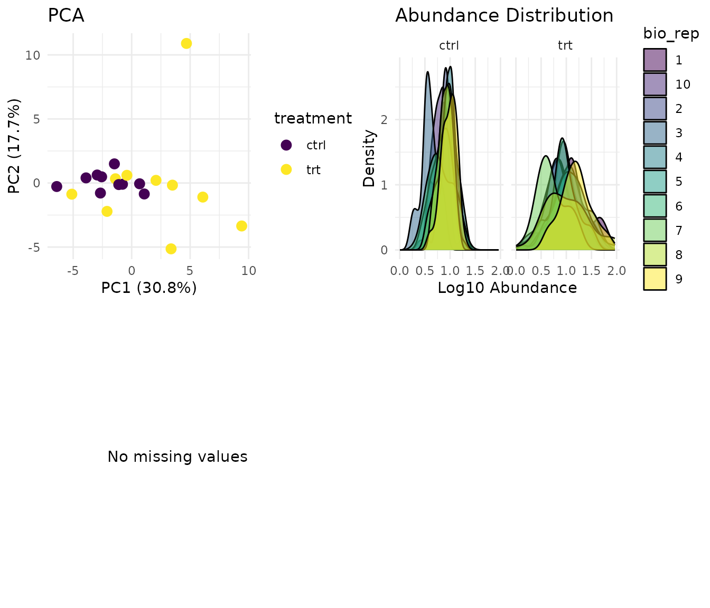
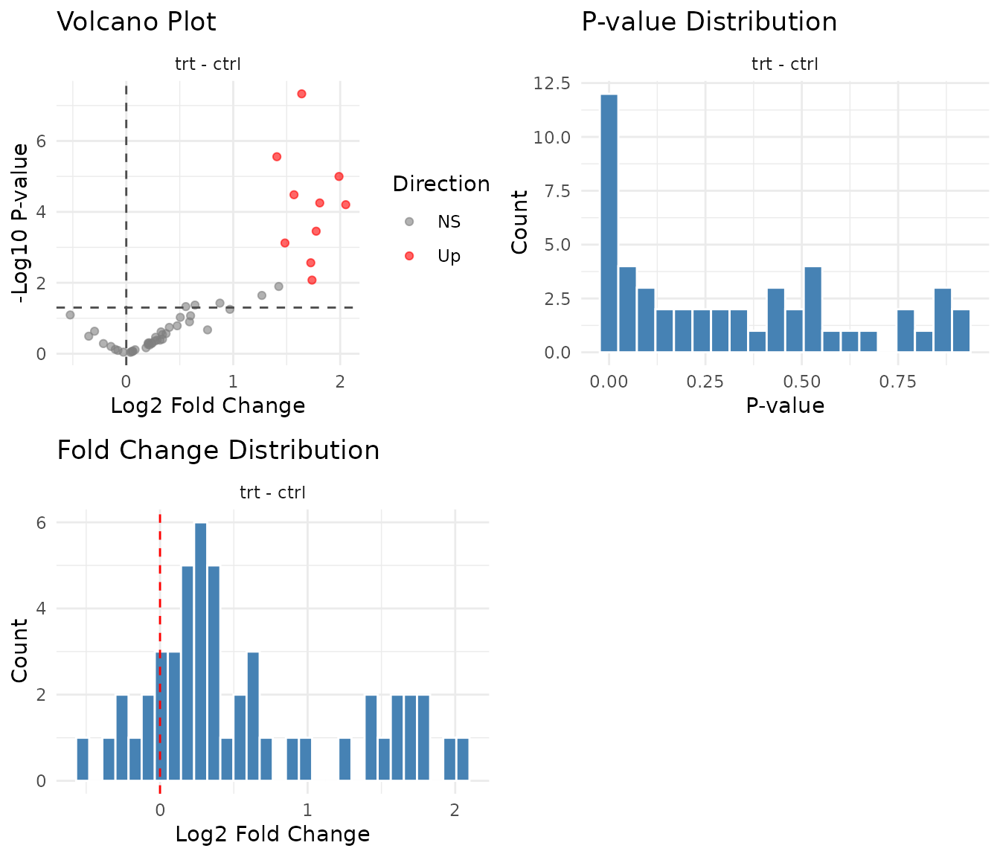

Getting Started with pepdiff
basic_workflow.RmdWhat is pepdiff?
pepdiff performs differential abundance analysis for PRM (Parallel Reaction Monitoring) proteomics data. Given peptide abundance measurements across experimental conditions, it identifies which peptides show significant changes between groups.
pepdiff is the analysis companion to peppwR, which handles power analysis and experimental planning. The workflow is:
- peppwR: “How many samples do I need?” (before the experiment)
- pepdiff: “What’s differentially abundant?” (after the experiment)
Installation
# Install from GitHub
devtools::install_github("macleand/pepdiff")Some features require Bioconductor packages:
# For heatmaps
BiocManager::install("ComplexHeatmap")
# For rank products test
BiocManager::install("RankProd")Creating example data
We’ll generate synthetic data to demonstrate the workflow. This represents a well-powered experiment: control vs treatment, with 10 biological replicates per group and 50 peptides measured. We use 3-fold changes for differential peptides - large enough to detect reliably with this sample size.
set.seed(123)
# Experimental design
# 10 reps and 3-fold changes give us good power to detect true effects
n_peptides <- 50
n_reps <- 10
conditions <- c("ctrl", "trt")
# Generate peptide names and gene IDs
peptides <- paste0("PEP_", sprintf("%03d", 1:n_peptides))
genes <- paste0("GENE_", LETTERS[((1:n_peptides - 1) %% 26) + 1])
# 30% of peptides (15 out of 50) will be truly differentially abundant
n_diff <- round(n_peptides * 0.3)
diff_peptides <- sample(peptides, n_diff)
cat("Truly differential peptides:", n_diff, "\n")
#> Truly differential peptides: 15
# Generate abundance data
# Proteomics abundances are typically right-skewed (can't go below zero,
# multiplicative processes). We use a Gamma distribution to reflect this.
sim_data <- expand.grid(
peptide = peptides,
treatment = conditions,
bio_rep = 1:n_reps,
stringsAsFactors = FALSE
) %>%
mutate(
gene_id = genes[match(peptide, peptides)],
# Base abundance varies by peptide (some peptides more abundant than others)
base_abundance = rep(rgamma(n_peptides, shape = 5, rate = 0.5), each = length(conditions) * n_reps),
# Treatment effect for differential peptides (~3-fold change up or down)
fc = ifelse(peptide %in% diff_peptides & treatment == "trt",
sample(c(0.33, 3), n_diff * n_reps, replace = TRUE, prob = c(0.3, 0.7)),
1),
# Final value with biological noise
value = rgamma(n(), shape = 10, rate = 10 / (base_abundance * fc))
) %>%
select(peptide, gene_id, treatment, bio_rep, value)
head(sim_data)
#> peptide gene_id treatment bio_rep value
#> 1 PEP_001 GENE_A ctrl 1 11.375198
#> 2 PEP_002 GENE_B ctrl 1 7.165007
#> 3 PEP_003 GENE_C ctrl 1 10.177513
#> 4 PEP_004 GENE_D ctrl 1 12.197742
#> 5 PEP_005 GENE_E ctrl 1 9.041446
#> 6 PEP_006 GENE_F ctrl 1 8.007804To use read_pepdiff(), we need data in a CSV file. Let’s
write our simulated data to a temporary file:
Importing data
The read_pepdiff() function imports your data and
creates a structured object for analysis. You tell it which columns
contain what:
dat <- read_pepdiff(
file = temp_file,
id = "peptide", # peptide identifiers
gene = "gene_id", # gene identifiers
value = "value", # abundance values
factors = "treatment", # experimental factors
replicate = "bio_rep" # biological replicate IDs
)
dat
#> pepdiff_data object
#> -------------------
#> Peptides: 50
#> Observations: 1000
#> Factors: treatment
#>
#> Design:
#> treatment=ctrl: 10 reps
#> treatment=trt: 10 reps
#>
#> No missing valuesThe print output shows you what you’ve got: number of peptides,
experimental design, and data quality summary. The
pepdiff_data object contains:
- data: Your measurements in long format
- factors: The experimental factors you specified
- design: Summary of your experimental structure
- missingness: Per-peptide missing data statistics
For more detail:
summary(dat)
#> pepdiff_data Summary
#> ====================
#>
#> Data dimensions:
#> - Total observations: 1000
#> - Unique peptides: 50
#> - Unique genes: 26
#>
#> Experimental factors:
#> - treatment: ctrl, trt
#>
#> Design summary:
#> # A tibble: 2 × 4
#> treatment n_reps n_peptides n_observations
#> <chr> <int> <int> <int>
#> 1 ctrl 10 50 500
#> 2 trt 10 50 500
#>
#> Missingness:
#> - Peptides with missing values: 0 (0.0%)Quick look at your data
Before running any analysis, visualise your data. The
plot() method gives you a multi-panel diagnostic view:
plot(dat)
What to look for:
- PCA: Replicates from the same condition should cluster together. If samples scatter randomly, you may have a quality issue.
- Distributions: Abundance distributions should be similar across samples. Large shifts suggest normalisation problems.
- Missingness: Random scatter is fine. Systematic patterns (whole peptides missing in one condition) suggest MNAR (missing not at random) - those peptides may not be analysable.
Running a comparison
Now for the analysis. The compare() function tests for
differential abundance:
results <- compare(
dat,
compare = "treatment", # which factor to test
ref = "ctrl" # reference level (what to compare against)
)
results
#> pepdiff_results object
#> ----------------------
#> Method: glm
#> Peptides: 50
#> Comparisons: 1
#> Total tests: 50
#>
#> Significant (FDR < 0.05): 10 (20.0%)
#> Marked significant: 10The “Marked significant” count in the output is the number of peptides detected as significant by the statistical test - not the number we know to be truly differential. With 15 truly differential peptides in our simulation, we hope to detect most of them while minimising false positives.
By default, compare() uses a Gamma GLM (generalised
linear model). Why Gamma? Proteomics abundances are positive and
right-skewed - they arise from multiplicative processes and can’t go
below zero. The Gamma distribution models this naturally, and the log
link means coefficients are interpretable as fold changes.
Understanding results
The results object contains everything you need:
# The main results table
head(results$results)
#> # A tibble: 6 × 11
#> peptide gene_id comparison fold_change log2_fc estimate se test p_value
#> <chr> <chr> <chr> <dbl> <dbl> <dbl> <dbl> <chr> <dbl>
#> 1 PEP_001 GENE_A trt - ctrl 0.695 -0.524 -0.363 0.196 glm 8.06e-2
#> 2 PEP_002 GENE_B trt - ctrl 0.905 -0.143 -0.0993 0.199 glm 6.24e-1
#> 3 PEP_003 GENE_C trt - ctrl 2.97 1.57 1.09 0.198 glm 3.28e-5
#> 4 PEP_004 GENE_D trt - ctrl 0.784 -0.351 -0.243 0.238 glm 3.21e-1
#> 5 PEP_005 GENE_E trt - ctrl 3.12 1.64 1.14 0.127 glm 4.68e-8
#> 6 PEP_006 GENE_F trt - ctrl 1.18 0.236 0.164 0.242 glm 5.07e-1
#> # ℹ 2 more variables: fdr <dbl>, significant <lgl>Key columns:
- fold_change: Ratio of treatment to control (>1 means higher in treatment)
- log2_fc: Log2 of fold change (easier to interpret: 1 = doubled, -1 = halved)
- p_value: Statistical significance
- fdr: False discovery rate-adjusted p-value (use this for significance calls)
- significant: TRUE if fdr < alpha (default 0.05)
Getting significant hits
The significant() function extracts peptides that passed
the significance threshold:
sig_peptides <- significant(results)
sig_peptides
#> # A tibble: 10 × 11
#> peptide gene_id comparison fold_change log2_fc estimate se test p_value
#> <chr> <chr> <chr> <dbl> <dbl> <dbl> <dbl> <chr> <dbl>
#> 1 PEP_003 GENE_C trt - ctrl 2.97 1.57 1.09 0.198 glm 3.28e-5
#> 2 PEP_005 GENE_E trt - ctrl 3.12 1.64 1.14 0.127 glm 4.68e-8
#> 3 PEP_009 GENE_I trt - ctrl 2.80 1.48 1.03 0.254 glm 7.54e-4
#> 4 PEP_014 GENE_N trt - ctrl 3.97 1.99 1.38 0.228 glm 1.00e-5
#> 5 PEP_015 GENE_O trt - ctrl 3.33 1.74 1.20 0.407 glm 8.39e-3
#> 6 PEP_025 GENE_Y trt - ctrl 3.42 1.78 1.23 0.280 glm 3.51e-4
#> 7 PEP_028 GENE_B trt - ctrl 4.15 2.05 1.42 0.274 glm 6.26e-5
#> 8 PEP_031 GENE_E trt - ctrl 2.65 1.41 0.976 0.146 glm 2.78e-6
#> 9 PEP_037 GENE_K trt - ctrl 3.50 1.81 1.25 0.239 glm 5.59e-5
#> 10 PEP_043 GENE_Q trt - ctrl 3.31 1.73 1.20 0.344 glm 2.72e-3
#> # ℹ 2 more variables: fdr <dbl>, significant <lgl>Visualising results
The plot() method for results shows you the key
diagnostic plots:
plot(results)
What to look for:
- Volcano plot: Points at the edges (large fold change + low p-value) are your confident hits. Symmetric spread is typical; all hits in one direction might indicate a global shift.
- P-value histogram: Under the null hypothesis (no true signal), p-values are uniformly distributed. A spike near zero indicates true positives. A U-shape suggests p-value inflation (something’s wrong).
- Fold change distribution: Should be centered near zero on log2 scale. A systematic shift suggests normalisation issues.
Comparing with our simulation
Since we generated this data, we know which peptides were truly differential. Let’s check how well we did:
# True positives: correctly identified as significant
true_pos <- sig_peptides$peptide[sig_peptides$peptide %in% diff_peptides]
# False positives: called significant but not truly differential
false_pos <- sig_peptides$peptide[!sig_peptides$peptide %in% diff_peptides]
# False negatives: truly differential but not called significant
false_neg <- diff_peptides[!diff_peptides %in% sig_peptides$peptide]
cat("True positives:", length(true_pos), "\n")
#> True positives: 10
cat("False positives:", length(false_pos), "\n")
#> False positives: 0
cat("False negatives:", length(false_neg), "\n")
#> False negatives: 5With 10 replicates and 3-fold effect sizes, we have good power to detect most true positives. FDR control at 5% means that among peptides called significant, we expect roughly 5% to be false positives - that’s the trade-off you’re making. With smaller sample sizes or weaker effects, you’d see more false negatives (missed true positives).
Next steps
This vignette covered the basic workflow. For more detail, see:
-
vignette("pairwise_tests"): Two-group comparisons with different statistical tests -
vignette("diagnostic_plots"): Visual quality control and interpretation -
vignette("glm_analysis"): Factorial designs with multiple factors -
vignette("art_analysis"): Non-parametric analysis when GLM assumptions fail